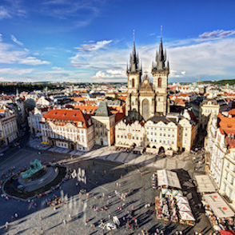

Not sure where to take your next vacation? Take this quick survey to find out where you should go next!
Your next vacation destination options are:
Prague
Prague, capital of the Czech Republic, is bisected by the Vltava River. Nicknamed “the City of a Hundred Spires,” it's known for its Old Town Square, the heart of its historic core, with colorful baroque buildings, Gothic churches and the medieval Astronomical Clock, with a popular show. Completed in 1402, pedestrian Charles Bridge is lined with 30 statues of saints.
Hong Kong
Hong Kong is a city, and former British colony, in southeastern China. Vibrant and densely populated, it’s a major port and global financial center famed for its tower-studded skyline. It’s also known for its lively food scene – from Cantonese dim sum to extravagant high tea – and its shopping, with options spanning chaotic Temple Street Night Market to the city’s innumerable bespoke tailors.
Budapest
Budapest, Hungary’s capital, is bisected by the River Danube, and the 19th-century Chain Bridge connects its hilly Buda district with flat Pest. A funicular runs up Castle Hill to Buda’s Old Town, where the Budapest History Museum traces life from Roman times onwards. Trinity Square is home to 13th-century Matthias Church and the turrets of the Fishermen’s Bastion, which offer sweeping views.
Your next vacation destination options are:
Switzerland

Switzerland is a mountainous Central European country, home to numerous lakes, villages and the high peaks of the Alps. Old Towns within its cities contain medieval landmarks like capital Bern’s Zytglogge clock tower and Cathedral of Bern. The country is also a destination for its ski resorts and hiking trails. Banking and finance are key industries, and Swiss watches and chocolate are renowned.
Austria

Austria is a German-speaking country in Central Europe, characterized by its mountain villages, baroque city architecture, Imperial history and rugged alpine terrain. Vienna, its Danube River capital, is home to the Schonbrunn and Hofburg palaces, and has counted Mozart, Strauss and Sigmund Freud among its residents. The country’s other notable regions include the northern Bohemian Forest, Lake Traun and eastern hillside vineyards.
Whistler
Whistler Blackcomb is a major ski resort north of Vancouver, in British Columbia, Canada. By many measures it is the largest ski resort in North America; it is 50% larger than its nearest competitor in terms of size, has the greatest uphill lift capacity, and until 2009, had the highest vertical skiable distance by a wide margin. Whistler Blackcomb also features the Peak 2 Peak Gondola for moving between Whistler and Blackcomb mountains at the top; Peak 2 Peak holds records for the highest and longest unsupported cable car span in the world.
Your next vacation destination options are:
Maui
Maui is an island in the mid-Pacific, part of the Hawaiian island chain and known for its beach resorts, diverse geography and outdoor activities ranging from hiking and biking to windsurfing and snorkeling. Sprawling Haleakala National Park encompasses the island’s highest peak, Mt. Haleakala, as well as the pools and waterfalls of Oheo Gulch, accessed via scenic, winding Hana Highway.
Bahamas

The Bahamas is a coral-based archipelago in the Atlantic Ocean, comprising 700 islands and cays that range from uninhabited to resort-packed. The northernmost, Grand Bahama, and Paradise Island, home to the sprawling Atlantis resort, are among the best known. Scuba diving and snorkeling sites include the massive Andros Barrier Reef, Thunderball Grotto and the black-coral gardens off Bimini.
Bora Bora

Bora Bora is a small South Pacific island northwest of Tahiti in French Polynesia. Surrounded by sand-fringed motus (islets) and a turquoise lagoon protected by a coral reef, it’s known for its scuba diving. It's also a popular luxury resort destination where some guest bungalows are perched over the water on stilts.
Your next vacation destination options are:
Hong Kong
Hong Kong is a city, and former British colony, in southeastern China. Vibrant and densely populated, it’s a major port and global financial center famed for its tower-studded skyline. It’s also known for its lively food scene – from Cantonese dim sum to extravagant high tea – and its shopping, with options spanning chaotic Temple Street Night Market to the city’s innumerable bespoke tailors.
Bahamas
The Bahamas is a coral-based archipelago in the Atlantic Ocean, comprising 700 islands and cays that range from uninhabited to resort-packed. The northernmost, Grand Bahama, and Paradise Island, home to the sprawling Atlantis resort, are among the best known. Scuba diving and snorkeling sites include the massive Andros Barrier Reef, Thunderball Grotto and the black-coral gardens off Bimini.
Austria
Austria is a German-speaking country in Central Europe, characterized by its mountain villages, baroque city architecture, Imperial history and rugged alpine terrain. Vienna, its Danube River capital, is home to the Schonbrunn and Hofburg palaces, and has counted Mozart, Strauss and Sigmund Freud among its residents. The country’s other notable regions include the northern Bohemian Forest.